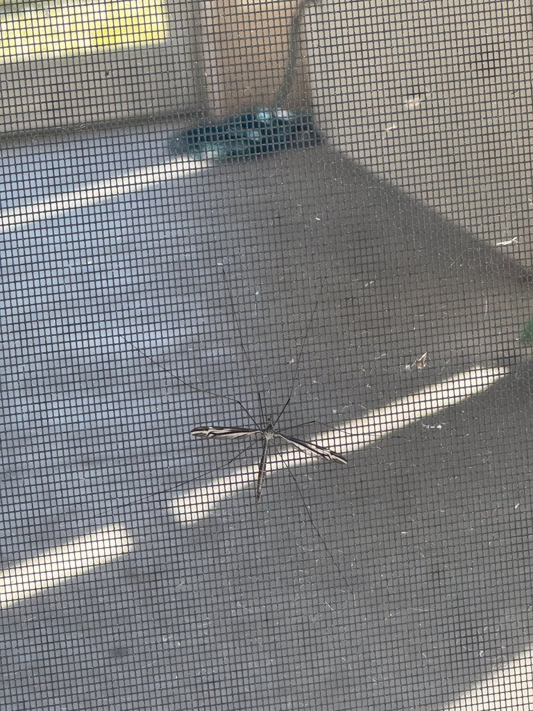

- Tipula furca has two subspecies — an unusually fine-grained taxonomic split for an insect that most people walk right past. It is a reminder that even the most overlooked backyard visitors carry complex evolutionary histories if you look closely enough.
- Despite being widely called Mosquito Hawks and Skeeter Eaters, adult crane flies cannot eat mosquitoes — or anything else solid. Their mouthparts are too reduced to bite or chew; they run entirely on fat banked during months of larval feeding.
- Look just behind the main wings and you will spot two tiny, club-shaped structures called halteres. These are the evolutionarily modified hind wings of all true flies, vibrating rapidly during flight to act as gyroscopic sensors that give the insect real-time balance and orientation data.
- Larvae earn the nickname leatherjackets from their tough, protective skin. Armed with enzymes that break down cellulose and lignin, they shred waterlogged leaf litter and decaying plant matter — acting as quiet but essential nutrient recyclers along moist soil edges and stream margins.
A large, extremely slender fly with legs so long they dangle visibly in flight — the insect equivalent of a stilt walker. The body is brownish-gray with a pale stripe along the top of the abdomen, and the wings show faint brown and whitish longitudinal banding.
Body length roughly 13 to 19 mm (about 0.5 to 0.75 in). The legs extend well beyond both ends of the body, making the insect appear substantially larger than measurements suggest.
Lightly patterned with brown and whitish longitudinal stripes — not plain and clear as in many crane flies. A dark costal spot (pterostigma) marks the leading edge near the wing tip. At rest, wings are held angled outward from the body, not folded flat. Just behind the wing bases, look for two small, club-shaped halteres — the modified hind wings that serve as gyroscopic balance organs during flight.
Slender and cylindrical, brown-gray overall, with a paler dorsal stripe running along the abdomen. The legs are light brown with darker brown at each joint. A V-shaped groove on the pronotum just behind the head is a family-wide field mark for Tipulidae.
Substantially larger, with a body length of 13 to 19 mm and far longer, conspicuously dangling legs. Flight is slow and wobbly rather than quick and directed. No elongated piercing proboscis. Wings carry distinct brown and whitish longitudinal stripes, lack the fine scales present on mosquito wings, and are held at an angle rather than flat. Two small, club-shaped halteres are visible just behind the wing bases — a feature mosquitoes share in miniature but that is especially prominent in crane flies.
Silent at every life stage. No calls, stridulations, or vocalizations of any kind. In flight, the wings produce a faint, low hum — noticeably quieter and lower-pitched than the high whine of a mosquito, and easily overlooked entirely.
Look for a large, gangly fly with legs that seem absurdly long relative to the body — light brown with darker joints. The wings are held angled outward at rest and carry faint longitudinal brown-and-white banding rather than being entirely clear. A pale stripe runs along the top of the abdomen. Just behind each wing base, two tiny club-shaped halteres are visible — the gyroscopic balance organs that help stabilize this otherwise wobbly flier. Flight is slow and bumbling, legs dangling loosely below. Size and leg length alone distinguish it from any mosquito; crane flies are noticeably larger and will not land on you to bite.
The larval stage is the only true feeding phase. Larvae consume decaying plant material, leaf litter, fungi, and organic matter in moist soil and stream-margin debris, aided by enzymes capable of breaking down cellulose, lignin, and other tough plant compounds. In more aquatic situations they also take fine detritus and algae. Adults have greatly reduced, non-functional mouthparts and take no solid food; their brief lifespan is fueled entirely by fat reserves banked during the larval months, though they may occasionally sip water or small amounts of liquid to stay hydrated.
Focus on the wetter edges of the park: the vegetated margins of any pond or drainage depression, the shaded underside of dense shrubs where leaf litter stays damp, and the outside walls and window screens of buildings near lights after dark. During the day adults rest motionless on vegetation or flat surfaces in humid, shaded spots. At dusk they become active and fly toward light sources, where they can be observed at close range with little disturbance.
Adults are on the wing for roughly ten to fifteen days per individual, so sightings come in pulses rather than continuously. In Florida's mild climate crane flies can appear in any season, but adult emergence is most predictable in spring and fall when soil moisture is highest following rain. Activity is concentrated at dusk and overnight. The eastern U.S. distribution of T. furca suggests it is more of a warm-season species in the Southeast, with spring the most reliable window locally.
Observe freely and closely — adults are slow-moving and tolerant of approach. No need to handle them; they are best appreciated as they go about their brief business on vegetation or near a light source at dusk.
- © katiet5 (CC-BY-NC), via iNaturalist